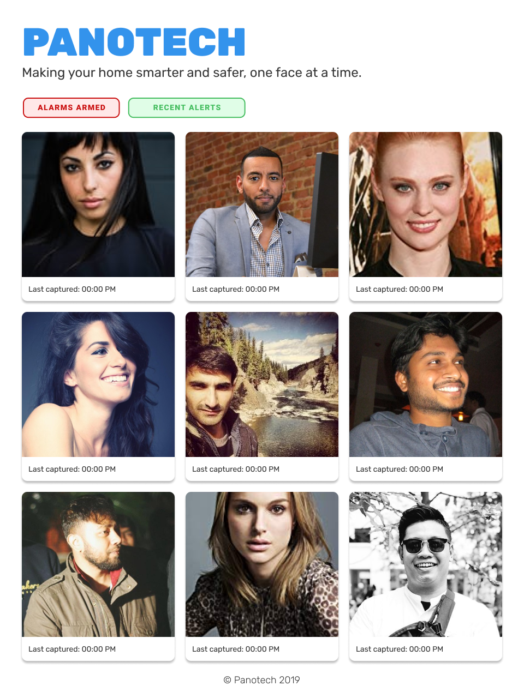
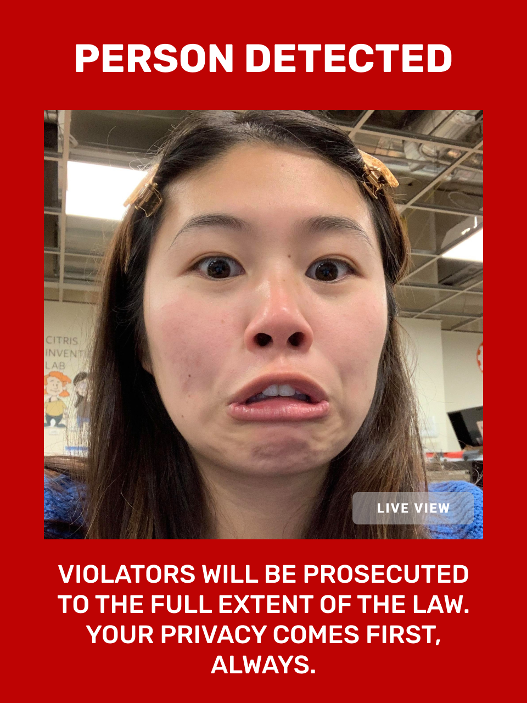
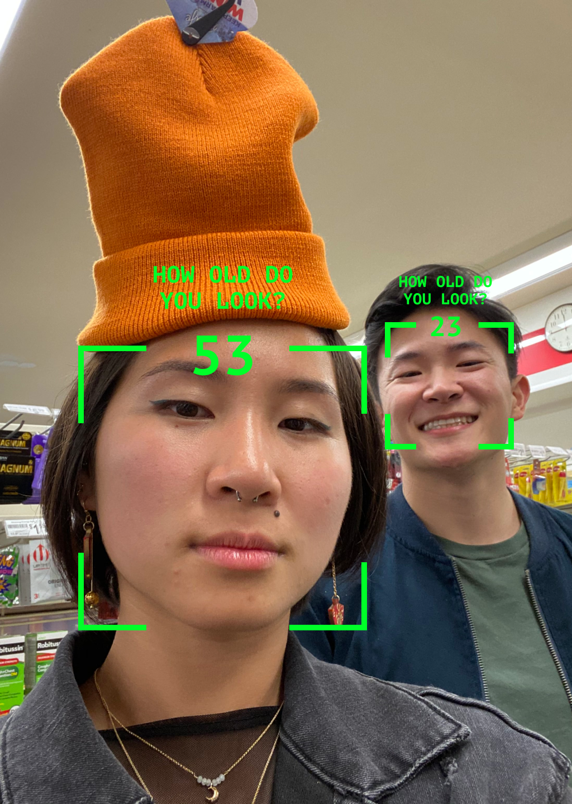
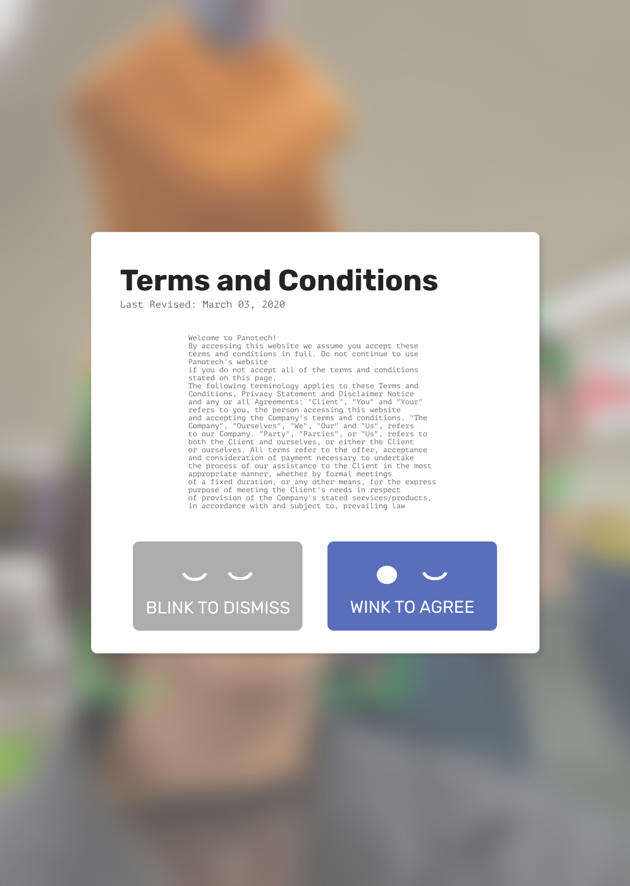

Panotech — Installation
Panotech is a smart monitor that captures a live stream feed of faces in a public space. A robotic surveillance system created with the goal of humanizing and critiquing the ever-present, growing reality of public surveillance, while bringing awareness and information about it to the public.
Panotech was originally created for ARTC166: Critical Practices. In Fall 2019, it won a Jacobs Hall showcase award, and recently won an Ignite Grant from Jacobs Hall to continue our work as a part of the 2020 Catalyst cohort.
Currently, it's featured in Worth Ryder Gallery as a part of 99 Robots, a student art exhibition that explores the concept of the robot in a time where our relationship with technology has heightened the artist's role as ethical interrogator.
In collaboration with Serena Chan, Cameron Chaney, Zeke Medley, and Noah Saso. Github repo here for software updates.
We were curious about what it would mean to give a face and body to surveillance, a process that is otherwise intentionally subversive.


Original Concept
The name and concept for Panotech is inspired by the panopticon, a system of control and institution from the 18th century, designed to allow all prisoners of an institution to be observed by a single security guard, without inmates being able to tell whether they are being watched. Our design concept mimics this by moving in a 360 degree fashion, creating an ever-present surveillance system realized in the form of a smart technology monitor.
In a public space, we are often unaware of the implication of hidden cameras secretly surveilling our every move; equally so, we don’t really think about how being in public, our faces/personal data are being tracked and kept. Amazon’s Ring doorbells, for example, are always filming whatever is happening outside the owners door and has partnerships with some 400 police departments so they can use the footage (Washington Post, 2019).
Our first prototype was hacked together with a thrifted swivel chair, modified screwdriver, servo motor, one arduino, a webcam, and Serena's spare desktop monitor.
Software
Diagram credit @ Zeke Medley
Zeke worked on the software, using openCV's face extraction scripts to detect faces from our attached webcam's live stream. To display information to the user, the machine runs an Electron application written in NodeJS, HTML, and CSS.It uses information about the appearance of the face and its location to interact with its environment, telling the servo motor to trigger the drill either forwards or in reverse. Consequently, the entire body and "face" of our monitor turns to search for more faces.
Mechanics
Cameron worked on the mechanics, first CAD modeling the body frame of the monitor and how it would swivel in response to the Arduino-controlled drill motions.
Our original idea for this project was for it to have a very sleek and elegant design, almost like Eve from WallE. The monitor setup mimics the feeling of a person, with a monitor as a face and a spinning chair as a torso.
After several iterations, the first full prototype's body was built and assembled using wooden beams, laser cut base plates, and nails to mount.


UI Design
Serena worked on branding and visual design, while I worked on the UI design and front-end coding.
The designs are inspired by smart security interfaces that are minimalist (like Ring tech), and the intention was to display a series of faces "collected" by our monitor. When a face is detected, it dynamically displays a red screen, warning the user of possible intruders that violate the space. However, as they're captured in a public setting, these faces are stored in the system, on display.
Much like widespread surveillance in our everyday lives, how our digital footprints are used and co-opted remains unclear.
After the showcase, we received a grant from Jacobs Hall and were accepted into an exhibition. Our second fully functional prototype took on a new direction.

Software
Diagram credit @ Zeke Medley
Zeke and Noah revamped the software, and our newly updated code runs faster and smoother than before on a Pi 4. Currently, there is close to real time face detection and UI drawing.
For the installation, the program runs with the flip of a switch and displays generated static noise when no faces are seen, giving it an ominous presence in the room.
Mechanics
Cameron built a new mounting system that allows for the monitor to be hung from hooks on the gallery ceiling, giving the system a floating, body-like figure with wires dangling loosely behind it.
For the future, we're thinking of using a newly purchased monitor for better viewing angles, and adjusting to find the ideal height for a user to interact with the monitor. We're also bringing an improved motor system similar to our original concept.


UI Design
After getting feedback that our messaging was unclear form exhibition passerbys, I iterated on designs that mimic widely popularized Instagram filters that project 'fun' interactions onto users' faces (guessing ages, what Trader Joe's product you might be, etc).
I also iterated on ways to better engage the user, like consenting to their facial data being used through a 'blink/wink' interaction to critique the often cryptic language and dark design patterns involved with giving digital consent to personal data along with confusing terms and conditions.